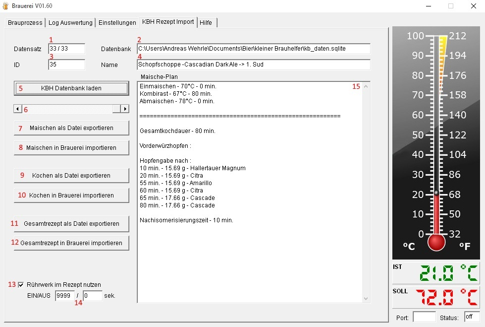

Hilfe Datei zu Brauerei V 1.56 – by Emilio - HOME
KBH Rezept Import:
KBH ist die Abkürzung für den kleinen Brauhelfer. Auf diesem Reiter können Rezepte zum Maischen oder zum Kochen in die Brauerei importiert oder als Rezeptdatei abgespeichert werden.

Anzeige für den aktuell angezeigten Datensatz
Verzeichnis und Dateiname der verwendete Datenbank
KBH interne ID für den angezeigten Sud
Name des aktuell angezeigten Sud
Datenbank laden:
Hinweis:
Ggf.
befindet sich die Datenbank in einem versteckten Ordner auf der
Festplatte.
Am besten den Pfad direkt aus den Einstellungen im
KBH kopieren und im OpenDialog einfügen und die kb_date.sqlite
auswählen.
Schieberegler um zwischen den Rezepten zu navigieren
Maische-Rezept des angezeigten Sud als Rezeptdatei exportieren
Maische-Rezept des angezeigten Sud in die Brauerei übernehmen
Koch-Rezept des angezeigten Sud als Rezeptdatei exportieren
Koch-Rezept des angezeigten Sud in die Brauerei übernehmen
Gesamt-Rezept des angezeigten Sud als Rezeptdatei exportieren
Gesamt-Rezept des angezeigten Sud in die Brauerei übernehmen
Rührwerk beim aktuellen Import nutzen
Ein- / Ausschaltpuls für das Rührwerk
Rezeptdaten des angezeigten Sud